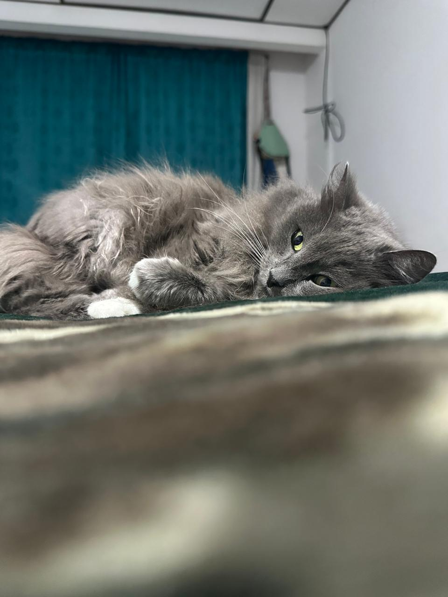

Los primeros años en Manizales
Nací en Manizales, Caldas, una ciudad que siempre recordaré con cariño porque allí comenzaron mis primeras experiencias de vida. Crecí en una familia muy unida conformada por mis padres y mi hermana menor, Ana María, quien desde muy pequeña ha sido una persona muy importante para mí.
Mi infancia estuvo marcada por el deporte: siempre disfruté correr, jugar y mantenerme activo, aunque con el tiempo el asma que padecía complicó la práctica de algunos deportes. Nunca perdí el gusto por competir y mantener un estilo de vida activo. Uno de los recuerdos más especiales de esta etapa fue mi gata Luna, más que una mascota, una compañera durante muchos años.
Aprendizaje: la importancia de disfrutar las pequeñas cosas y valorar el tiempo compartido con quienes queremos.
Referencia teórica: Erik Erikson — el desarrollo de la confianza y de las primeras relaciones afectivas, donde el apoyo familiar permite construir seguridad emocional para afrontar los retos posteriores de la vida.